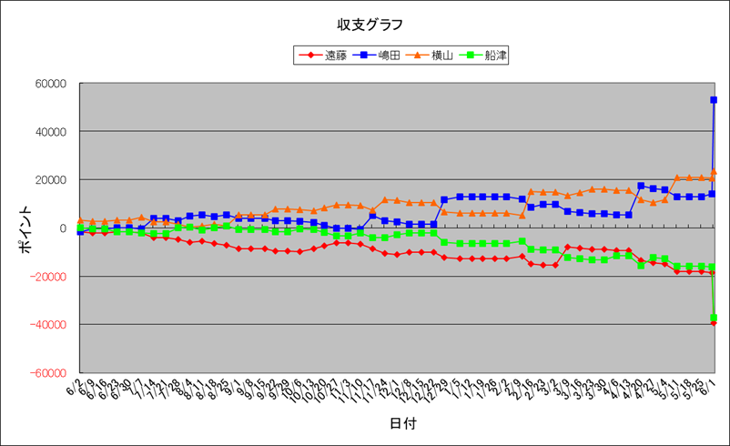

カンピドリオ 未勝利勝ち！！
クロワデュノール 東京優駿 GI勝ち！！
| 順位 | 馬主 | 今年度収支 | 今年度ﾎﾟｲﾝﾄ | 1頭当ﾎﾟｲﾝﾄ | 1走当ﾎﾟｲﾝﾄ | 勝率 | 連対率 | 複勝率 | ﾃﾞﾋﾞｭｰ頭数 | 勝馬頭数 | 出走回数 | 1着 | 2着 | 3着 | 4着 | 5着 | 着外 |
|---|---|---|---|---|---|---|---|---|---|---|---|---|---|---|---|---|---|
| 1 | 嶋田 | 53000 | 29550 | 1970.0 | 547.2 | 22.22% | 38.89% | 51.85% | 15 | 8 | 54 | 12 | 9 | 7 | 3 | 6 | 17 |
| 2 | 横山 | 23600 | 22200 | 1480.0 | 304.1 | 27.40% | 41.10% | 50.68% | 15 | 12 | 73 | 20 | 10 | 7 | 7 | 6 | 23 |
| 3 | 船津 | -37200 | 7000 | 466.7 | 118.6 | 23.73% | 44.07% | 52.54% | 15 | 11 | 59 | 14 | 12 | 5 | 4 | 3 | 21 |
| 4 | 遠藤 | -39400 | 6450 | 496.2 | 129.0 | 18.00% | 32.00% | 44.00% | 13 | 5 | 50 | 9 | 7 | 6 | 6 | 1 | 21 |

Last Updated:2025/06/01